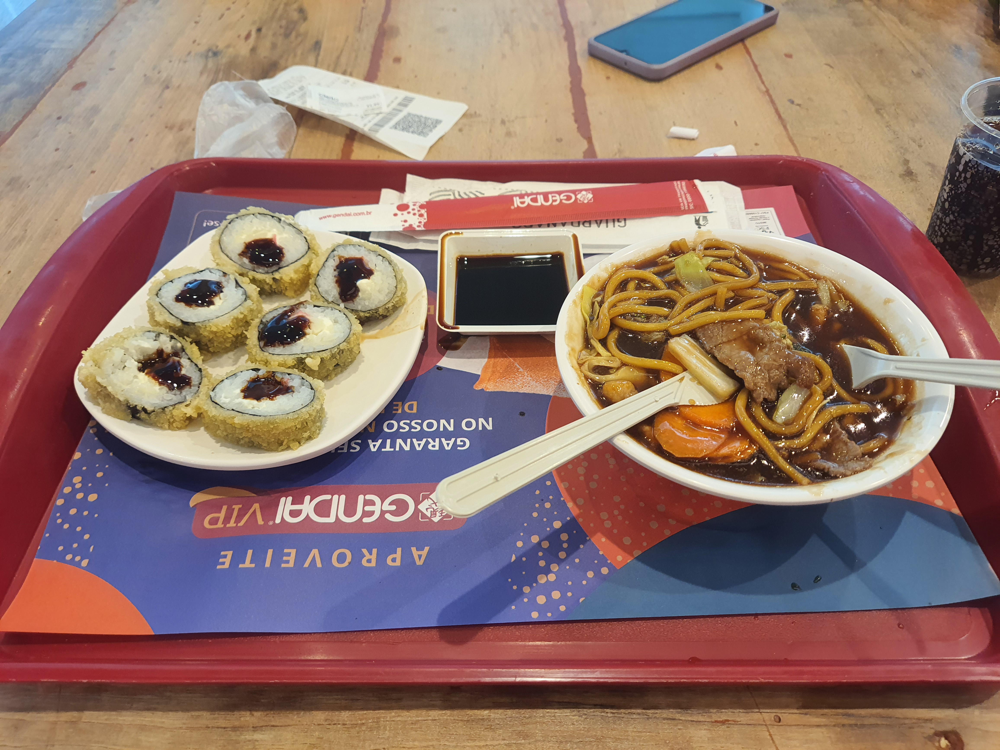
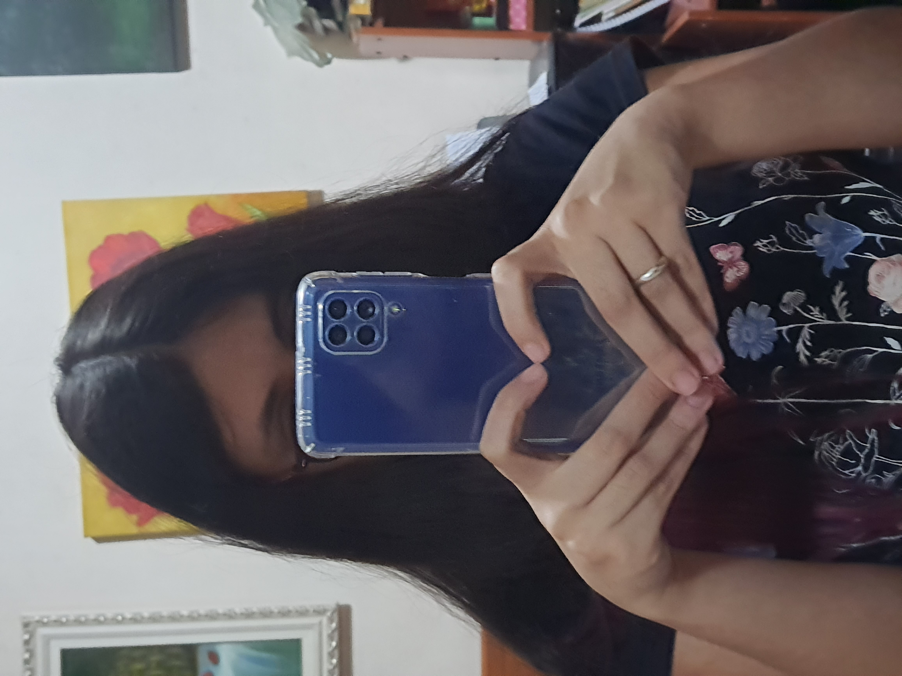
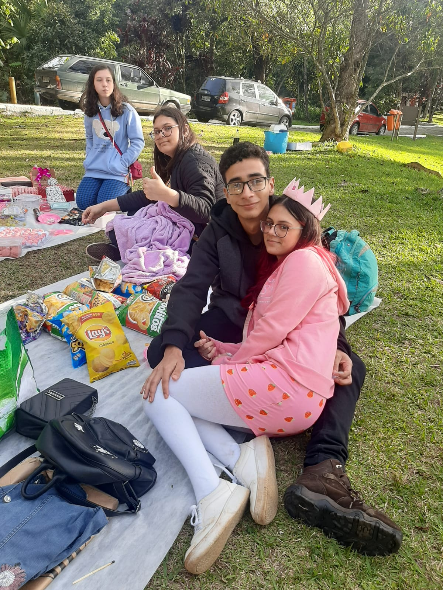

Antes de tudo, vou me desculpar com antecedência do que estou fazendo, tanto com você, quanto com o Tiago.
De todos os erros que eu cometi com você, esse é o último que você vai ter que passar.
Apesar disso, eu peço de coração que você dê atenção pelo que eu fiz aqui. Não desejo respostas, não espero uma reação sua, eu só precisava fazer tudo isso, porque nunca me senti assim antes, e se eu não fizesse, só Deus sabe o que aconteceria ou que ainda pode acontecer comigo, por tudo que venho guardando e vou guardar. Peço que por favor, você leia e veja esse site sozinha, pois é algo muito particular. Não vou me poupar, vou falar tudo o que eu quero falar, tudo o que eu quero expressar de uma vez só, pra que eu não precise fazer isso de novo depois.
Desde o dia que eu te vi pela primeira vez, na arquibancada da quadra do Ábaco, como eu já falei pra você, e mesmo na época você concordou, eu senti algo que na época eu não soube identificar o que era. Lembro daquele sentimento como se eu tivesse sentido ontem. Hoje eu sei que aquilo era um sinal pra mim, pra me mostrar que aquela garota que estava na minha frente, mudaria minha vida para sempre de uma maneira radical. Como um idiota, naquele período eu demorei muito pra me tocar a garota especial que estava do meu lado, no 7º ano. Nas aulas de redação, que conversávamos eu, você, Matheus e Heitor, ou então nas aulas de história, que ficávamos sempre do lado esquerdo da sala, ouvindo as histórias do Professor Henrique, você sempre foi uma amiga companheira, que fazia meus tempos de escola felizes, junto do resto do grupinho. Você sempre gostou de mim, e eu até hoje nunca entendi o porque. Sempre fui um menino meio bobão, as vezes engraçadinho, não tinha uma aparência muito boa, mas mesmo assim você viu algo em mim, e isso mudou minha vida.
Passei muito tempo perdendo tempo gostando de alguém que nunca tinha dado nada por mim, a Julinha. Ela me tratava mal, e eu não percebia o seu valor, do meu lado, que desde quase sempre me queria. Uma das suas maiores qualidades sempre foi o seu caráter e sua bondade, o que nos dias de hoje é algo a se valorizar muito, além disso, é linda, divertida e muito carinhosa, mas eu custei pra perceber tudo isso, e por sermos apenas pré-adolescentes, errávamos, como é normal pra qualquer um, mas não se pode subestimar a consequência que um erro pode causar, mesmo que pareça pequeno. Foi só no 8º ano que eu me permiti dar uma chance pra você, algo que ao mesmo tempo eu devia ter feito antes, por tudo o que você era, também foi cedo demais. Éramos instáveis, muito imaturos e eu ainda tinha sentimentos pela Julia. Um dos meus principais erros no relacionamento foi esse. No auge da imaturidade, namorar uma ainda gostando de outra abriu brecha pra que no futuro eu projete esse erro em outros erros, o que foi gerando uma bola de neve que veio a estourar em 2022. Perdão. Mas isso foi passando, e com o tempo eu só tinha olhos pra você. Mas os erros continuavam.
Quantas vezes nós acabávamos discutindo por conta de anime ou política? É claro que em uma discussão normalmente nunca tem só um que está errado, porém em muitos casos, eu admito, foi culpa minha. Nunca namorei antes, e eu achava que você tinha que sempre estar alinhada com tudo comigo. Não podia existir discordância. O que é claramente falso, a discordância também tem valor em um relacionamento. Me arrependo muito de ter te colocado de contra o muro, para, algumas vezes, mudar de opinião. Mesmo em meio a essas discussões bestas, nós crescemos, tenha sido influenciado ou não por elas. Mas as discussões não eram sempre negativas, as vezes conversávamos sobre nosso futuro, questões sociais relevantes pra nós, onde iríamos morar, aquelas horas em call que eu ficava conversando com você pra te ajudar com uma profissão... Foram momentos de conversa que tem muito valor no nosso desenvolvimento de pessoa. Mesmo assim, eu te ajudei a crescer e você fez igualmente comigo de volta. Você fez com que eu desenvolvesse aos poucos minha capacidade de empatia, noção das palavras, amor, proteção, entre inúmeras outras. Há coisas que eu acredito que jamais aprenderia se você não tivesse passado na minha vida, e eu te agradeço muito por isso, do fundo da minha alma.
Jamais vou esquecer dos momentos bons que tivemos. Quando ficávamos depois da aula nas mesinhas do ábaco, ou lá em cima perto do transporte das peruas, que foi quando você me pediu em namoro e começou tudo. Ou quando, perto dos armários, você me deu o meu primeiro beijo, em um verdade ou desafio. Nas aulas eu sempre buscava ficar atrás de você, pra ficar mexendo no seu cabelo no meio da aula, o que acabou rendendo várias fotos constrangedoras nossa. Você sempre foi minha primeira em tudo. Esses momentos de paixão na adolescência são coisas que não se é capaz de esquecer, vou guardar pra sempre isso comigo. Nunca vou esquecer de quando ficamos pela primeira vez sozinhos, de quando fiz carinho no seu rosto na casa da avó da Julia, de quando você veio pela primeira vez na minha casa, de quando fomos pros shopping passear de mãos dadas, quando você preparou surpresas pra mim, de quando assistíamos Spy x Family ou Breaking Bad juntos, de quando jogamos Skyrim na minha casa, de quando eu entreguei a sua aliança nova no seu aniversário, de quando viajamos pra aquela chácara no interior com seus pais no ano novo... São tantos momentos bons, que eu nunca vou esquecer e vou pra sempre guardar com muito carinho, como parte de mim. Pra mim, nenhuma crise, discussão, momento ruim, ou mesmo o término vai apagar tudo de bom que aconteceu entre nós. Você, não foi só a primeira, como vai ser sempre a minha primeira.
Quando eu sentia o seu toque de afeto, quando eu recebia o seu beijo, eu conseguia sentir claramente o amor que você transmitia nas suas ações por mim, e a sensação de saber que você é amado é impagável. Os nossos anos de namoro renderam muitos momentos calorosos, que quando eu penso neles, ao mesmo tempo que me conforta o coração, acaba sendo muito doloroso também. Eu cheguei a imaginar todas as coisas possíveis do nosso futuro. Eu te via como minha noiva, visualizava a gente comprando nossa casa e ajeitando ela do nosso jeito, vivendo os dias simples de rotina e se amando todos os dias. Imaginei muito nossos filhos e como seria minha vida ao seu lado. Era e ainda é, para mim, cenas lindas que me aperta o coração porque eu sei que seriam coisas boas até demais para mim. Quando eu penso em você, eu só consigo te relacionar com um "lar", como se você fosse meu abrigo, de onde eu pertenço. Você era meu refúgio. A pessoa que eu poderia confiar para qualquer coisa. Você era a pessoa que eu poderia pertencer a ti. Poderia me abrir e saberia que eu seria amado de volta. Você foi tudo pra mim.
Você fez parte da minha vida, e se tornou uma parte de mim, que ficou em você. Você se lembra dos dias que ficávamos na sua casa? Era tudo tão simples. Nós ficávamos no sofá, jogando alguma coisa no celular, assistindo algo, talvez na rede, as vezes víamos um filme na televisão com seus pais, e comíamos alguma coisa que sua mãe fazia pra gente, e era tão bom. A simplicidade era perfeita, porque eu estava com você. Você fazia as coisas mais simples e normais se tornarem interessantes e belas. Dar risada com você era um momento de ouro, porque eu podia ver seu sorriso lindo de perto e ouvir sua voz suave e alegre expressando felicidade ao meu lado. Como eu sinto saudade disso. Quando se está com a pessoa que você ama, todos os problemas desaparecem, e a única coisa que importa é o presente e aproveitar aquela pessoa. Deitar com você era uma sensação tão calmante. Você fazia eu me lembrar de quando eu era só uma criança, e que depois que eu durmisse, eu ia acordar no dia seguinte com a mente tranquila e vazia, recomeçando um novo dia. Seus carinhos e massagens nas minhas costas fazia eu me transportar pra outro mundo, de tão tranquilo que eu ficava. E quando eu via seu rosto relaxado, de olhos fechados, eu sentia uma paz grande. É um sentimento que mal dá pra explicar, mas eu me sentia "certo", sentia que eu estaria bem, não importa o que acontecesse, desde que eu estivesse ao seu lado.
Mas eu tinha que estragar tudo. Não estávamos em um momento bom. Eu estava muito focado no meu time de Pokémon Unite, e você muito focada com as provas do ábaco, mas o maior problema não foi esse. Aquele meu padrão de beleza ridículo fudeu com tudo. Eu carreguei essa coisa a um bom tempo, já tinha tentado esquecer, mas não fiz isso o suficiente. Aos poucos eu fui falando pra você mexer na sua aparência, fui diminuindo a frequência que elogiava sua aparência, fui impondo algumas coisas em você e projetando uma outra pessoa em você. O maior erro começou ali, quando eu fui lentamente começando a não aceitar a pessoa que você é, a pessoa maravilhosa que você é. Tivemos discussões, tivemos recaídas e voltamos, o que acabou só adiando o que tava sempre se encaminhando pra acontecer, da gente finalmente terminar por iniciativa minha e do meu complexo imaturo.

Nas primeiras semanas depois do nosso término oficial, eu estava bem abalado, mas eu fui melhorando rápido. Rápido até demais. Eu comecei a me distrair com outras coisas, mas eu nunca deixei de pensar em você, e em o que eu poderia ter feito de diferente. O contrato daquele apartamento tava acabando e eu decidi que queria morar em Sorocaba. Aquilo foi uma fuga, fugir de São Bernardo, que é onde eu acumulava tantas memórias, incluindo as suas, que as vezes me atormentava. Eu te vi saindo do ábaco exatamente no dia da minha mudança, como se fosse um filme de drama. E assim foi. Sorocaba fez eu tirar minha cabeça das lembranças e focar no presente. Eu fui pensando em você com menos frequência. Até aquele dia de quando eu te mandei mensagem no whatsapp, que eu estava no Parque Ibirapuera. Eu senti que eu estava deixando algo importante pra trás, mas não era capaz de entender direito ainda. Mas eu fui infantil, te chamei sem pensar nas consequências. Nos vimos mais tarde, pra tentar resolver tudo, na academia, shopping e no parque, que foi a penúltima vez que eu vi você pessoalmente. Naquele dia eu fui completamente sincero e honesto, falei tudo o que eu pensava. O problema, era justamente esse, AS COISAS QUE EU PENSAVA.
NADA nesse mundo importa mais do que o amor, e apenas isso é o suficiente pra manter um relacionamento. É o único requisito, todo o resto da pra consertar, nós tínhamos problemas que eram completamente corrigíveis, algumas coisas que apenas o tempo já seria o suficiente pra arrumar. Eu devia ter consertado. Era um problema interno MEU, e não seu. Você jamais foi o problema. Eu tinha que me tratar e fui negligente. Porra, uma coisa tão óbvia, e eu nem pensei em buscar ajuda psicológica? O amor é o que importa, e eu te amava. Nunca deixei de amar, desde quando percebi que você era a pessoa pra mim, desde quando beijei você e aprendi a curtir o momento, desde quando senti seu cheiro e passei a gostar dele, desde quando penteei seu cabelo e você cuidou de mim de volta, desde quando trocávamos presentes e comíamos alguma coisa gostosa juntos, desde quando eu saia com você e voltava pra casa satisfeito do dia. Mas eu não aprendi uma das coisas mais importantes de todas: valorizar.
Eu não aprendi a valorizar você e a pessoa que você representou pra mim. Por ter começado a namorar tão cedo, passei minha adolescência quase inteira namorando, e isso não é o normal, mas na minha cabeça era. Nunca aprendi a como tratar uma namorada, nunca aprendi que as pessoas a qualquer momento podem ir embora, que podem em qualquer dia não serem mais elas. Por conta de um problema interno, eu desperdicei a maior jóia da minha vida: você. Eu nunca mais vou encontrar alguém como você. Que cuidou de mim com tanto ternor, que me entendeu sempre tão bem, que me acolhia independente da situação. Você é o amor da minha vida, e eu demorei muito pra perceber isso. Passei tempo demais desperdiçando com mulheres que no fundo eu sabia que não seriam boas pra mim. Julia ou a garota do curso. Nenhuma delas seria como você. Nenhuma me amaria da forma como você me amou, nenhuma faria as coisas que você fez por mim. Dizem que os homens demoram pra sentir a dor do término, enquanto as mulheres sentem de imediato, mas vai superando, e eu achava que isso era falso, até quebrar a cara pra caralho.
Eu mereço isso. Eu te fiz sofrer muito. Eu nem consigo mensurar o quanto você chorou por minha causa, quantas lágrimas derramou por mim. Desculpa. Perdão. Me perdoa. Te fiz sofrer tanto por algo que não era necessário. Agora estou sofrendo e consigo começar a entender a dor que fiz você sentir. Eu te amava e você também me amava. Não ERA pra ter acontecido o que aconteceu, não era pra a gente ter terminado. Foi uma síntese da minha imaturidade e canalhisse que causou esse furacão. Te deixei em um momento tão delicado, da sua família, da sua escola. Me perdoa, de verdade. Eu nunca faria essas mesmas coisas. Eu mudei, eu larguei a mentalidade imbecil que eu tinha. Hoje eu olho pra trás e vejo o tamanho da idiotice que eu fiz, e agora me esforço muito pra me cuidar de nunca cometer os mesmos erros. Eu jamais quero vê-la triste novamente, eu jamais vou fazê-la ficar triste de novo. Deus, se eu pudesse voltar atrás e consertar os erros do passado, essa seria a primeira coisa que eu faria. Eu precisava ter valorizado você. Ter valorizado as pessoas que me AMAM, as que gostam de mim. Você era a que mais me amava, eu precisava de você.
Esse foi o maior erro da minha vida.
Eu acabei com uma história que poderia ter sido linda. Eu descartei a caneta que escreveria nossa jornada. Eu joguei fora a pessoa mais importante da minha vida. Eu passei meses e meses me odiando por isso, desde fevereiro desse ano, que foi quando começou a cair a ficha das coisas que eu fiz. E agora eu sei que é tarde demais pra tudo isso. Eu devia ter percebido tudo isso antes, em setembro, e ter ido na MERDA DO SEU ANIVERSÁRIO. De todas as falhas, talvez essa tenha sido a maior. Eu devia ter ido. Devia ter pelo menos te considerado. Que porra se passava na minha cabeça? Eu devo tanto a você, eu te amo tanto, e eu te tratei desse jeito?! Quando eu te vi na academia, que não faz tanto tempo assim, eu congelei completamente, porque veio tudo tão forte na minha mente, que eu não sabia o que fazer, vendo você ali, a mulher que ocupava minha mente dia e noite. Naquele momento, ao mesmo tempo que eu queria ir falar com você, eu sabia que eu tinha feito você sofrer tanto, e eu me sentia, e ainda me sinto culpado. Talvez, se fosse hoje, eu teria feito diferente.
Você já deve saber, e já deve ter percebido, mas eu ainda te amo. Amo como se ainda estivéssemos namorando. Eu sei que você não queria ter ouvido isso agora, e sim 8 meses atrás. Mas eu falhei. Falhei com você, e demorei pra perceber a falta que você faz na minha vida. Peço perdão a você pelo que estou fazendo agora. Esse site é egoísta, não posso negar. Mas eu precisava expor meus sentimentos. Não to simplesmente me apegando as lembranças, você é muito mais do que apenas lembranças. O que eu queria de verdade mesmo, era falar com você pessoalmente, mas eu entendo que isso dificilmente seria possível dada as circunstâncias. Queria te abraçar mais uma vez, sentir seu cheiro mais uma vez, te olhar de perto mais uma vez. Eu seria o homem mais feliz do mundo se eu pudesse ter essas coisas de novo.